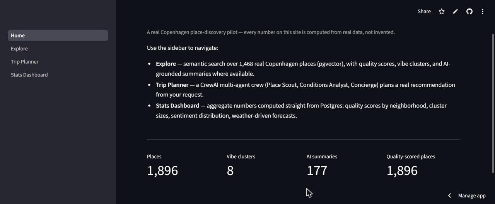
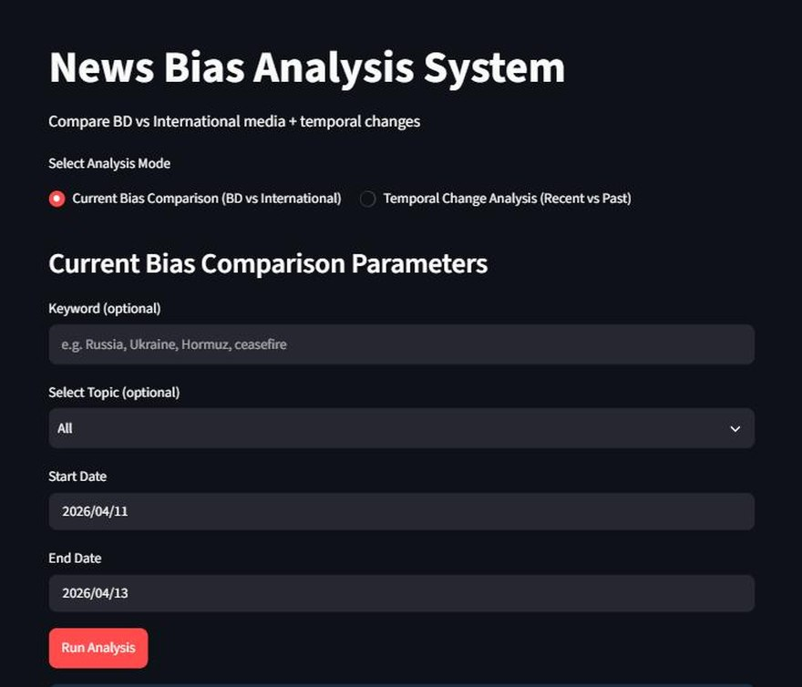

Data Analyst · Copenhagen · Open to roles across Denmark
Rakib Hasan.
I turn messy data into decisions people actually use.
Data analyst with five years of hands-on data and reporting work and an MSc in Business Data Science, Aalborg University (thesis graded 10). I work in SQL, Python, Excel and Power BI.
In my last role, management ran daily decisions on my dashboards. I also build end to end, from NLP/LLM pipelines to machine learning models that are live today.
- 5 yrsData & reporting
- 8,000+Articles analysed
- 3Live apps
Work that shipped.
Planning a real trip, not a demo.
A trip-planning tool is only useful if it's honest about what it knows. I built one that reasons over real places and real weather, with a model that reports its own accuracy instead of hiding it.
Trip-planning tools either hand you generic listicles or hallucinate details with no way to check them. There's no single tool that reasons over real place data, live conditions, and an honestly-reported model.
A full-stack platform: Next.js/React/TypeScript frontend on Vercel, FastAPI backend on Render, and a Neon PostgreSQL/pgvector database. A RAG pipeline (fastembed embeddings, pgvector similarity search) grounds GPT-4o summaries in real Copenhagen places sourced from OpenStreetMap, with a live Nominatim/Serper fallback covering thin or missing listings. A two-agent CrewAI system (OpenAI GPT-4o-mini, GPT-4o) plans a real recommendation grounded in live Open-Meteo weather, using Pydantic-validated structured intent to deterministically route each request (near, far, sequential, or area) instead of relying on free-form AI tool calls, never inventing a fact it can't cite.
Built and backtested a live XGBoost recommendation-confidence classifier (Optuna-tuned, MLflow-tracked) that combines offline DistilBERT sentiment with real-time semantic signals. It raised correlation with real outcomes from r = 0.171 (the previous quality-score model) to r = 0.713. Prompt quality was validated with a live A/B test.
Next.js · React · TypeScript · FastAPI · PostgreSQL/pgvector (Neon) · RAG · CrewAI · GPT-4o · Pydantic · XGBoost · DistilBERT · Optuna · MLflow

Reading bias at scale.
Media bias is easy to sense and hard to measure. For my master's thesis I built a system that measures it at article level, across outlets, refreshes itself every day, and serves the results live.
Bias in geopolitical news coverage is discussed constantly but rarely quantified. Manual analysis doesn't scale past a handful of articles.
An end-to-end Python pipeline: source-specific scrapers (BBC, The Guardian, The Daily Star, New Age) run daily via GitHub Actions, storing every article in a SQLite database and feeding a continuously updating corpus. TF-IDF and sentiment analysis give a baseline and pair comparable coverage; GPT-4o then scores framing, selection/omission, sourcing and tone, with an LLM-as-a-judge check on every analysis.
A corpus of 8,000+ articles that refreshes itself daily, and an interactive Streamlit app where anyone can compare outlets and time periods. The main finding: South Asian outlets put humanitarian consequences first, while international outlets gave more weight to diplomacy and strategy. Graded 10 on the Danish 7-point scale (top grade 12).
Python · Pandas · SQL · GPT-4o · TF-IDF · GitHub Actions · Streamlit · trafilatura

Analyst's discipline, builder's instinct.
I started in operations. For five years at a transport and logistics company I owned the operational databases, built the Excel and Power BI dashboards management used every day, and used client feedback data to find and fix service problems, which raised client satisfaction scores by 80% and cut costs by 20%.
That taught me what happens to a business when data isn't accurate or trusted. I then did an MSc in Business Data Science at Aalborg University to go deeper into machine learning, NLP and data engineering. Today I'm a data analyst on the research team at Fair & Fornuftig, a Copenhagen think tank, and I keep building projects that run live.
- Location
- Copenhagen, Denmark
- Work permit
- Full-time work permit in Denmark
- Focus
- Data analysis · BI & reporting · Forecasting · NLP/LLMs · Machine learning
- Languages
- English (fluent) · Danish (beginner)
Where I've worked.
Data Analyst, Research team Fair & Fornuftig, Copenhagen
- Turn data into the evidence behind the research team's reports and policy proposals on integration and welfare in Denmark, for a nonprofit think tank on public debate.
- Clean, analyse and visualise data so findings are clear and easy for readers to check.
- Adapting my thesis NLP pipeline to track how Danish news covers the topics the team investigates.
Operations Assistant (Part-time) Zara (Inditex Danmark), Strøget, Copenhagen
Stock handling in a high-volume flagship store, keeping the sales floor in line with stockroom inventory. Tight daily routines with a large team, where accuracy and attention to detail matter.
Assistant Manager, Data & Reporting V. A. Transport Agency · transport and logistics
- Built and maintained the recurring Excel and Power BI dashboards that management used for day-to-day logistics decisions, replacing manually assembled updates.
- Analysed client feedback and operations data to find service problems and fixed them with other teams, raising client satisfaction scores by 80%, helping win new clients and cutting costs by 20%.
- Owned the company's operational databases, keeping the data behind every team's reporting accurate.
- Analysed scheduling data and streamlined workflows, reducing recurring planning errors and delays.
Senior Officer V. A. Transport Agency · transport and logistics
- Maintained operational records and service data supporting planning, follow-up and cross-team communication.
- Coordinated transport operations, customer communication and documentation; improved reporting processes.
Part-time Assistant Manager & Sushi Chef Karma Sushi Aalborg & Catch Sushi Bar
Worked in a Danish team alongside a full-time MSc: quality control in high-volume service and onboarding new team members.
Academic background.
MSc in Business Data Science Aalborg University, Denmark
Thesis on AI-assisted media bias detection with NLP and LLMs, graded 10 on the Danish 7-point scale (top grade 12). Coursework across applied machine learning, NLP & network analysis, deep learning, data-driven business modelling, data governance & ethics, and data engineering & MLOps.
BBA, Management Information Systems University of Dhaka
Statistics, econometrics, database management and information systems. Winner, MIS Debating Championship. Where the business-first lens on data started.
What I work with.
The everyday work: clean data, solid numbers, reports people act on.
SQL · Python (Pandas, NumPy) · Power BI · Excel (pivot tables) · Statistics · A/B testing · KPI reporting · Data cleaning · Data quality & validation
Forecasts and models, tracked and tested before anyone relies on them.
Scikit-learn · XGBoost · LightGBM · PyTorch · TensorFlow · Time-series forecasting · MLflow · Optuna
Language models grounded in real data, not left to guess.
OpenAI API · RAG · Embeddings · CrewAI · LangChain · Ollama · Hugging Face Transformers · Prompt engineering
Pipelines and apps that keep running without me touching them.
PostgreSQL (pgvector) · SQLite · ETL pipelines · Web scraping (Playwright, BeautifulSoup) · FastAPI · Docker · Git/GitHub · GitHub Actions · Streamlit · React/Next.js
Outside the notebook.
Volunteering
Training
Leadership
Off hours
- Nature Walks
- Photography
- Travelling
- Reading
Let's make your data
worth trusting.
Open to Data Analyst, BI Analyst and Data Scientist roles in Copenhagen and across Denmark. Feel free to reach out; I usually reply within a day.